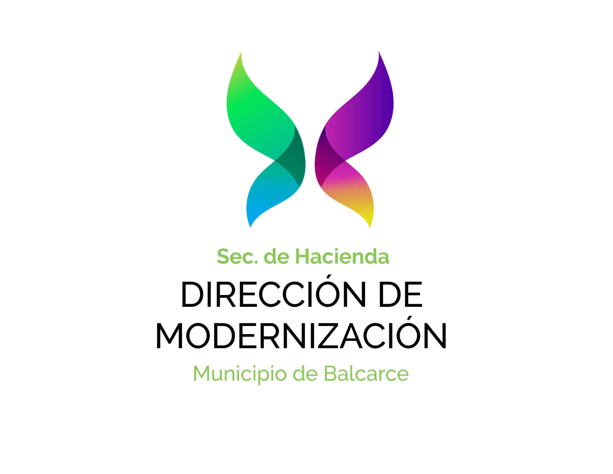
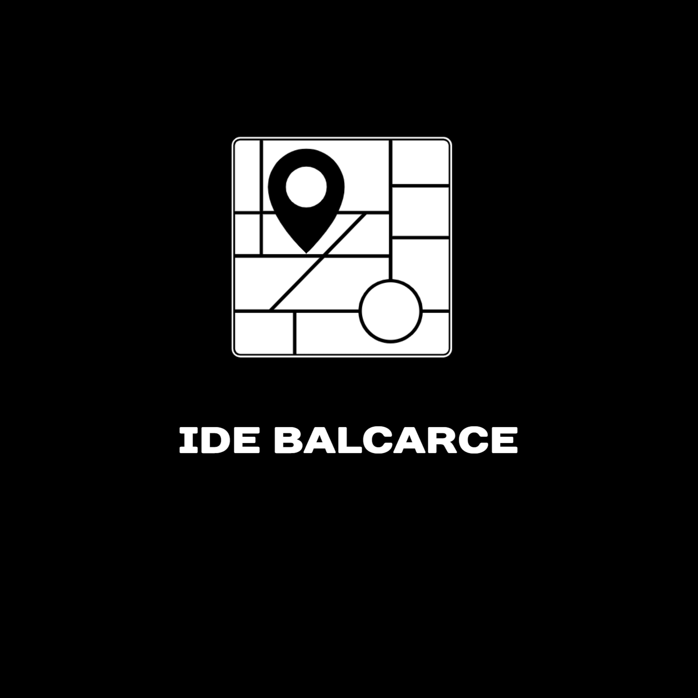
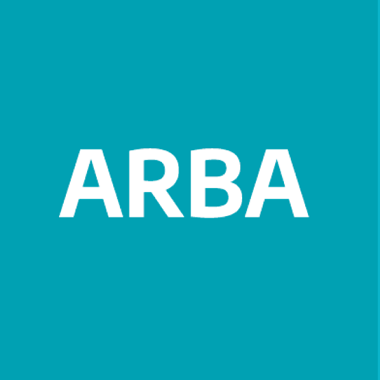

// ORGANISMOS Y CONVENIOS CON LOS QUE COLABORO



Directora de Modernización · Especialista en GIS y Transformación Digital
+11 años liderando la innovación en el sector público. Transformo territorios con datos, procesos digitales y soluciones orientadas al ciudadano.
// ORGANISMOS Y CONVENIOS CON LOS QUE COLABORO



Licenciada en Geografía y Técnica en SIG, combino análisis territorial con tecnología de punta para transformar la gestión pública en soluciones tangibles para la ciudadanía.
Lidero la transformación digital del municipio de Balcarce: GDE, firma digital, catastro actualizado con ARBA y la creación de la Infraestructura de Datos Espaciales local.
Diplomada en Ciencia de Datos e IA (UTN), aplico machine learning, teledetección y análisis con R/Python para resolver problemas complejos del mundo real.
Capacito equipos municipales en herramientas 4.0 y coordino convenios estratégicos con IDERA, ARBA, INTA y universidades, articulando sector público, academia y tecnología.
Municipalidad de Balcarce
GEOS · Agroservicios del Sudoeste
DPE · Municipalidad de Lobería
Página de trámites digitales del municipio.
Infraestructura de Datos Espaciales municipal para planificación territorial abierta.
Cero papel en municipio y Honorable Consejo Deliberante. Expediente 100% digital.
Relevamiento de edificaciones no declaradas y actualización del catastro territorial.
Vigilancia Epidemiológica Territorial junto a INTA-FCA. Monitoreo de contactos estrechos.
Coordinación del proyecto "Economía del Conocimiento para Municipios" (CESSI/MUMUKI).
Índices NDVI/MSI para seguimiento de cultivos y detección de plagas con drones.
UTN FRBA
FCA UNMDP
UNICEN
UNICEN
Abierta a colaboraciones en modernización del Estado, GIS, datos geoespaciales y proyectos de impacto territorial.